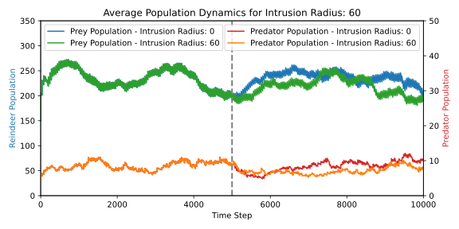
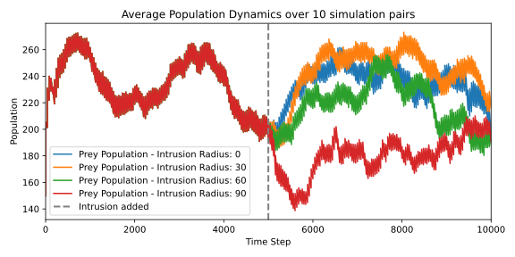

Simulation Animation
Witness the dynamic interactions and behaviors modeled by our simulation framework. This animation represents one of the many scenarios our project can simulate.
Result Visualization
Our results are presented with detailed graphical visualizations to provide clarity and deeper insights. Below are examples of our analysis:
Analysis 1: Average Population Dynamic with intrusion 0 and 60
Analysis 2: Average Population Dynamic with intrusion 10 runs
Analysis 3: Culling drop vs intrusion radius